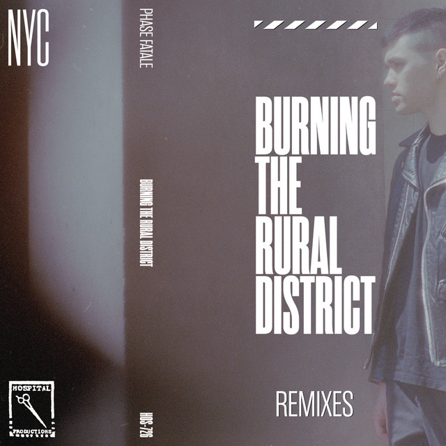

Phase Fatale - Burning the Rural District



Información del álbum facilitada por discogs.com:
Fecha de lanzamiento: 2022
Géneros: Electronic
Estilos: Techno, Industrial, Electro
Pais: UK
Sello: Autospace Records
Pressed By: Orlake Records
Lacquer Cut By - Porky (5)
Tracklist:
A1. Forward Chrome 6:12
A2. Hazer (feat. robogeisha) 5:27
A3. White Line Nightmare 5:44
A4. Puritanism 3:28
B1. Face Lift 5:23
B2. The Drowned World 5:47
B3. Autoworship 5:40
B4. Burning The Rural District 5:28